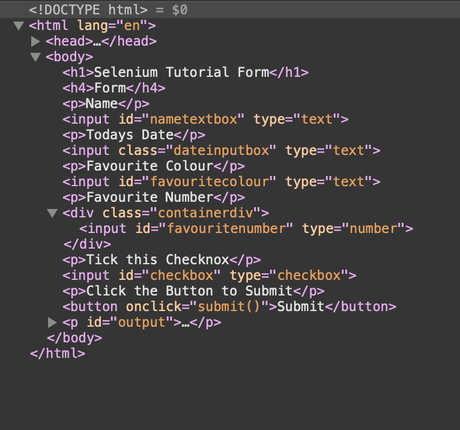

Objective
The goal of this session is to use the Selenium Web Automation framework to automate filling in web forms, then submitting the form.
Installation & Setup
We're using Python3. For this tutorial you will need to use an editor of your choice - whilst Notepad would technically work we recommend getting an actual IDE (or Integrated Development Environment; a fancy way of saying "code editor") such as PyCharm.
We are also using a single Python Library, Selenium, and a Web Driver, which depends on your Browser.
We will need to use a Terminal to install this. To get to Terminal, search cmd on Windows, or terminal on MacOS. This is a text based way of controlling your computer. The Selenium Library can be installed by typing the following into your terminal: (Requires Python to be Installed)
pip install seleniumWeb Driver
To use Selenium we will need to install a Web Driver, a Web Driver is a tool which allows us to remotely access, and conrol, a web browser. We will need this for todays exercise.
Now the Web Driver you install depends on which Browser you are using, in this tutorial I have instructions for Safari, Edge and Firefox, but if you want to use another Browser you will need to install the Web Driver from the following link: Selenium WebDriver
Firstly go to the Firefox Gecko Webdriver page: GeckoDriver
Scroll to the 'Assets' subsection and click on the relevant file
Once downloaded, extract the Zip and place geckodriver.exe into the Python3.7 Scripts folder.
The Scripts folder can be found in your Python3.7 download, on Windows this is typically at
C:\Users\Username\AppData\Programs\Python\Python37\Scripts
The driver is now installed, restart your computer and you are ready to go!
Firstly enable Developer mode on Safari - Safari > Preferences > Advanced > Then tick the 'Show Develop menu in menu bar' checkbox
Now you'll need to open a terminal and type:
safaridriver --enableFinally in Safari click on the Develop dropdown menu and Allow Remove Automation
You have now enabled the driver, restart your computer and you are ready to go!
Firstly enable Developer mode on Edge - Go to Settings > Update and Security > For Developer and then select 'Developer mode'
Now you'll need to open a command prompt in Administrator mode and type:
DISM.exe /Online /Add-Capability /CapabilityName:Microsoft.WebDriver~~~~0.0.1.0You have now enabled the driver, restart your computer and you are ready to go!
Writing some Code
Now that you have installed both the Selenium Library and the WebDriver for your browser, we are ready to start coding!
Start by opening up the IDE of your choice, and creating a new file/project.
The first thing we want to do is import the relevant Selenium libraries. We also want to import the time module so we can introduce delays.
from selenium.webdriver.common.by import By
from selenium import webdriver
from selenium.webdriver.common.keys import Keys
import unittest
import time
After importing the libraries, we need to create a Driver variable to reference throughout the program. This depends on which Browser you use:
SafariWebDriver = webdriver.Safari()FirefoxWebDriver = webdriver.Firefox()EdgeWebDriver = webdriver.Edge()So now we have a WebDriver ready to use, so how do we use it? It's quite easy really, it just uses CSS to determine what to click/type into etc.
Using Inspect Element
To use Selenium with a website, you need to know the structure of the webpage itself
Start by right clicking on a webpage, It will show an option called Inspect Element. Click this.
Now you will be able to see the structure of a webpage.
From this structure you can see class names, denoted by class="someclass", id's, denoted by id="someid" and the general structure. Now we can start to automate the process.
Visit: This Form and use the examples below, or follow me on the screen, to automatically fill in the form!
#Connect to a website
WebDriver.get("www.website.com")
#Find an Element by ID
item = WebDriver.find_element_by_id('id')
#Find Element by Class Name
item = WebDriver.find_element_by_class_name('class')
#Find Elements by Path
item = WebDriver.find_elements_by_xpath("css-path")
#Enter text into textbox
item.send_keys('some text')
#Click a button
item.click()
#Wait for x seconds
time.sleep(x)